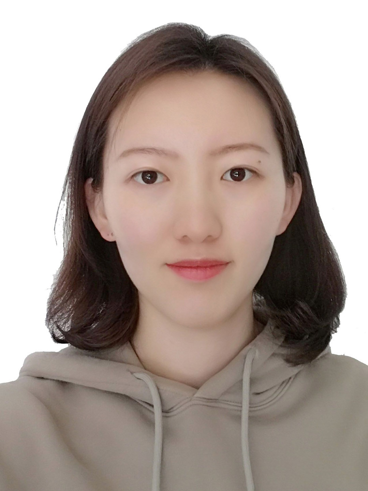

|
Zhou, Yiqing (周益清)
|
 |
PhD student,
NUMA, Department of Computer Science, KU Leuven,
Celestijnenlaan 200A, 3001 Leuven, Belgium
E-mail: yiqing.zhou@kuleuven.be
|
About me
2014-2018 B.S. degree, Department of Physics, Nanjing University, China
2018-2021 M.S. degree, Institute of Acoustics, Chinese Academy of Sciences, China
2021-2022 visiting PhD student, Department of Computer Science, KU Leuven, Belgium
2021-2023 PhD student, Institute of Acoustics, Chinese Academy of Sciences, China
2023-now PhD student, Department of Computer Science, KU Leuven, Belgium
Research
My research interests include:
Current work
Under review
No
Publications and Conference
Zhou, Y.-Q.*; Luo,W.-Y. A Finite Element Model for Underwater Sound Propagation in 2-D Environment. J. Mar. Sci. Eng. 2021, 9, 956. [pdf]
周益清*, 骆文于, 吴双林. 双层介质声传播问题的标准解及有限元解[J]. 声学技术, 2022, 41(2): 214-219. [pdf]
周益清*, 骆文于. 海水吸收对远距离水下声场计算的影响[J]. 声学技术, 2022, 41(1): 214-219.[pdf]
周益清*, 骆文于, 吴双林. 三维声传播模型BELLHOP3D的MPI并行优化[J]. 应用声学. [pdf][code]
张泽众, 骆文于*, 庞哲，周益清. 孤子内波环境下三维声传播建模[J]. 物理学报, 2019, 68(20). [pdf]
张泽众*, 骆文于, 庞哲，周益清. 浅海孤子内波对水平纵向相关性的影响[J]. 应用声学, 2019, 038(005):851-856. [pdf]
周益清*，骆文于. 有限元声场建模中的人工边界条件[C]. 全国计算声学大会, 2021. [pdf]
Zhou Yiqing*, Luo Wenyu. An Efficient Parallel Method of the Underwater Beam Tracing Model BELLHOP3D[C]. icsv28, Singapore. [pdf][code]
Note: * indicates the corresponding author.
|